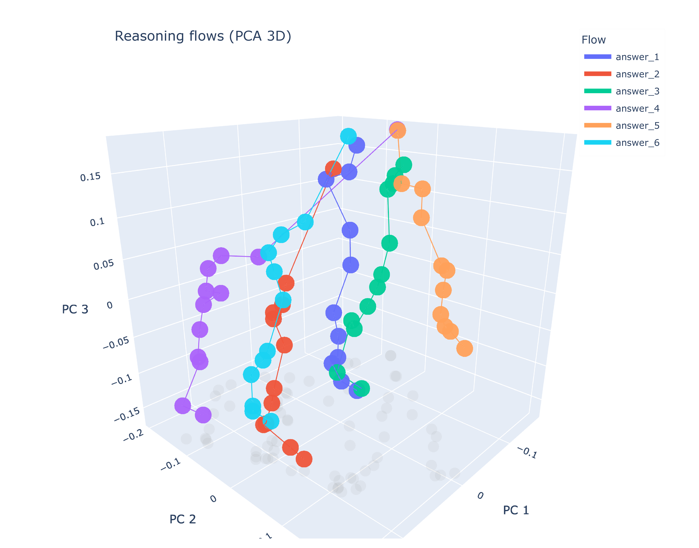

The Geometry of Reasoning: Flowing Logics in Representation Space
ICLR 2026
We discover that LLM reasoning traces smooth, continuous trajectories through representation space, where logical statements act as velocity controllers -- revealing that next-token prediction training encodes logic as geometric structure, not just surface patterns.
We propose a geometric framework for analyzing reasoning in large language models (LLMs) through representation space. By modeling reasoning as flows -- embedding trajectories shaped by logical principles -- we investigate how LLMs process and internalize logical structures. To disentangle logic from semantics, we design experiments that apply identical logical structures with varying semantic content, testing whether LLMs capture logic beyond surface-level patterns. Our theoretical analysis reveals two key insights: (1) LLM reasoning manifests as smooth flows in representation space, and (2) logical statements regulate flow velocities locally. Through carefully controlled experiments using learned representation proxies, we visualize and measure the reasoning flows, validating our theoretical framework. Our findings suggest that next-token prediction training enables LLMs to encode logical patterns as higher-order geometric structures, countering the "stochastic parrot" critique and pointing to potentially universal representational principles across architectures.

What Does "Thinking" Look Like?
When a language model reasons through a problem, what is happening inside? We know tokens flow through layers, activations transform, and somehow an answer emerges. But is there a deeper structure to this process? Can we see reasoning itself?
We propose that reasoning has a geometry -- that the process of logical deduction corresponds to smooth, continuous trajectories through the model's representation space. Like a ball rolling down a landscape, reasoning follows paths shaped by the logic of the problem.
The Core Intuition
Imagine each logical state as a point in high-dimensional space. As the model reasons from premise to conclusion, it traces a path through this space. The shape of this path -- its position, velocity, curvature -- encodes the nature of the reasoning. Logical statements act as forces that guide and accelerate this flow.
Theoretical Framework
We develop a formal framework connecting reasoning to differential geometry. Representations evolve as continuous flows; logical operations correspond to velocity fields; valid inferences follow geodesics. This is not just metaphor -- we derive mathematical relationships and test them empirically.
Reasoning as Continuous Flows
Model the evolution of hidden representations across transformer layers as a continuous dynamical system governed by an ODE, where each layer applies a smooth transformation to the representation state.
Logic as Velocity Control
Formalize how logical statements (premises, rules, conclusions) function as local velocity controllers that shape the direction and magnitude of the reasoning flow through representation space.
Geometric Measures
Define three interpretable geometric quantities -- position (what state the reasoning is in), velocity (how fast it progresses), and curvature (how sharply it turns) -- to characterize reasoning trajectories.
Learned Representation Proxies
Train lightweight neural probes to project high-dimensional hidden states into interpretable low-dimensional spaces, enabling visualization and quantitative measurement of reasoning flows.
Disentangling Logic from Semantics
One challenge in studying reasoning is separating what a model knows from how it thinks. We designed experiments that hold the logical structure constant while varying the semantic content -- the same deduction rules, different topics. If the model has internalized logic, its reasoning flows should share geometric properties across different semantic carriers.
Key Theoretical Results
- Smooth Flows: LLM reasoning manifests as smooth, continuous trajectories in representation space with low curvature
- Logic as Control: Logical statements function as velocity controllers for reasoning flows, locally regulating speed and direction
- Geometric Interpretability: Position, velocity, and curvature provide interpretable measures of reasoning quality and progress
- Beyond Surface Form: LLMs appear to internalize logical structure as higher-order geometric patterns, not just surface-level statistics
Beyond Stochastic Parrots
A central debate in AI is whether LLMs truly "understand" or merely parrot statistical patterns. Our geometric analysis provides new evidence: if models were simply memorizing surface patterns, we would not expect to see consistent geometric structures preserved across different semantic instantiations of the same logic. The smoothness and consistency of reasoning flows suggests that next-token prediction training encodes something deeper -- potentially universal representational principles that transcend specific architectures.
Empirical Validation
We develop techniques to visualize and quantify these reasoning flows using learned representation proxies across the Qwen and LLaMA model families. The experiments confirm our theoretical predictions: reasoning traces smooth paths, logical structure is preserved across semantic variations, and the geometry reveals interpretable properties of the reasoning process.
The framework makes testable predictions: reasoning should be smooth (low curvature), logical steps should accelerate the flow in consistent directions, and different semantic instantiations of the same logic should produce parallel trajectories. All three predictions are validated empirically.
A New Lens on Understanding
This geometric perspective offers a new way to understand what language models are doing when they "think." Rather than treating the model as a black box that somehow produces answers, we can trace the continuous evolution of its representations and see reasoning unfold geometrically.
The implications extend to interpretability, debugging, and improving reasoning capabilities -- if we understand the geometry of good reasoning, we might be able to guide models toward better trajectories.
Broader Impact
Understanding the geometric structure of reasoning opens avenues for diagnosing reasoning failures, designing better training objectives for logical tasks, and potentially developing representation-space interventions that steer models toward more reliable and interpretable reasoning paths.